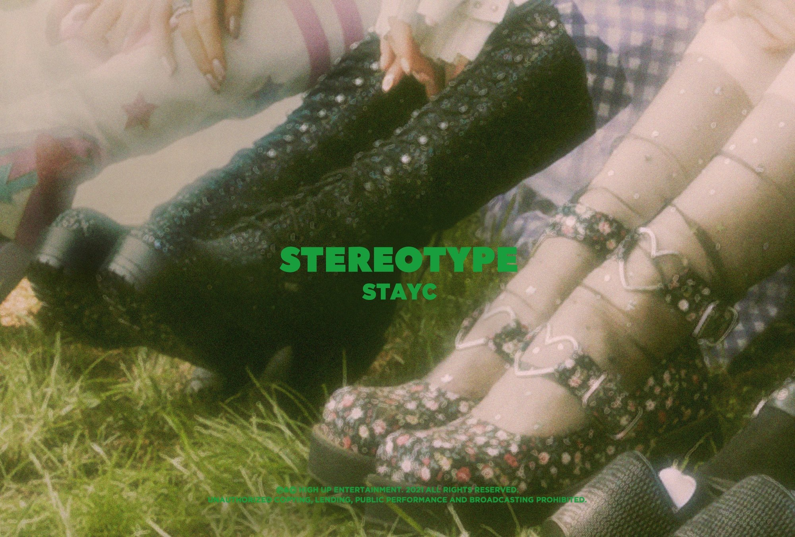

ในเพลง ‘STEREOTYPE’ 6 สาว STAYC ได้แสดงได้เห็นถึงเสน่ห์ความเฉพาะตัวของพวกเธอด้วยสไตล์คอนเซปต์ที่พวกเธอเรียกว่า ‘TEEN FRESH’ ถ่ายทอดความสดใสของวัยรุ่นออกมา พร้อมกับการเติบโตของวงที่อัปเกรดจากการโปรโมตก่อนหน้านี้
ซึ่งในเพลงนี้ยังคงเป็นผลงานการโปรดิวซ์ของดูโอ้โปรดิวเซอร์ Black Eyed Pilseung เช่นเดิม
ซูมิน “ความหมายตรงๆ ของเพลงนี้คือเรื่องของการสื่อออกไปว่าไม่ควรตัดสินใครแค่เพียงภาพของเขาภายนอกค่ะ แต่ให้มองลึกไปถึงตัวตนของเขาแบบจริงใจไม่มีอคติ”
ชีอึน “คอนเซปต์ของเพลง STEREOTYPE ที่วางเอาไว้แต่แรกคือเราอยากส่งข้อความออกไปว่าอยากให้ทุกคนมอง STAYC ในแบบที่ไม่มีอะไรมาบดบังเหมือนกับใส่แว่นตากันแดดค่ะ ซึ่งในเพลงก็จะมีข้อความที่สื่อถึงการมองโลกนี้ในแบบที่ไม่มีอคติมาบดบัง หรือตัดสินอะไรง่ายๆ ด้วยการมองแค่ภายนอก
ก็เลยออกมามาเป็นคอนเซปต์ที่ดูสง่างามและแสดงความเป็นตัวเองของแต่ละคนที่ชัดเจนออกมา ซึ่งรวมถึงมุมที่ดูตรงไปตรงมา แล้วก็มีมุมที่ดูเปิ่นๆ ในแบบของพวกเราด้วยค่ะ”
ยุน “ในเพลง STEROTYPE จะแสดงให้เห็นความงดงามที่เปล่งประกายภายนอก และความเป็นตัวตนภายในที่ไม่ผ่านการตกแต่งใดใดค่ะ ซึ่งฉันคิดว่ามันเป็นภาพที่เข้ากับธีมของอัลบัมนี้มาก ในการสื่อว่าอย่าตัดสินอะไรแค่เพียงภายนอกเท่านั้น””
เจย์ “พวกเราตั้งใจที่จะแสดงความเป็นตัวเองของพวกเราออกมาผ่านเพลงนี้ค่ะ ทั้งในมุมที่สง่างามและมุมที่ซี่อตรง แล้วก็ในเพลงนี้เราถ่ายทำ MV กันอย่างสนุกมากๆ หวังว่าทุกคนจะได้ชม MV ของเราและถูกใจกันนะคะ”

ความพิเศษที่จะเกิดขึ้นในกิจกรรมโปรโมตของ ‘STEREOTYPE’
เจ “ในครั้งนี้พวกเราได้ถ่ายคอนเทนต์กันเอาไว้เยอะมากค่ะ มีให้ดูกันได้แบบไม่เบื่อแน่นอน รอติดตามกันนะคะ”
ซูมิน “ถึงแม้ว่าช่วงนี้จะทำอะไรหลายๆ อย่างยากกว่าปกติ แต่พวกเราก็ได้เตรียมคอนเทนต์ที่ทุกคนสามารถรับชมกันได้ง่ายๆ จากที่บ้านค่ะ หวังว่าทุกคนจะสุขภาพแข็งแรง แล้วก็ดูคอนเทนต์ที่พวกเราเตรียมกันไว้นะคะ””
ชีอึน “การทำกิจกรรมในครั้งนี้พวกเราทุ่มเทกันมากยิ่งขึ้นจริงๆ ค่ะ SWITH ทุกคนจะได้ดูคอนเทนต์ในหลายๆ แบบที่ต้องชอบกันแน่ๆ ทุกคนจะได้เห็นเคมีของพวกเรามากขึ้นจากคอนเทนต์และกิจกรรมโปรโมตอัลบัมชุดนี้ รอติดตามกันให้ดีๆ นะคะ แล้วก็อย่าลืมเตรียมซ้อมเต้นท่าในเพลง STEREOTYPE กันไว้ให้ดีด้วยนะคะ”
เซอึน “ฉันคิดว่าการเตรียมตัวสำหรับโปรโมตอัลบัมนี้มันแตกต่างจากการโปรโมตครั้งก่อนๆ ของเรามากค่ะ และมันจะสนุกมากแน่นอน คอยติดตามกันนะคะ”